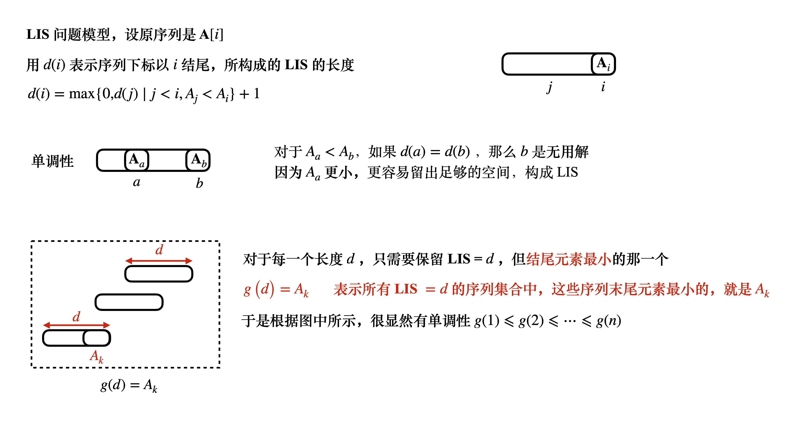
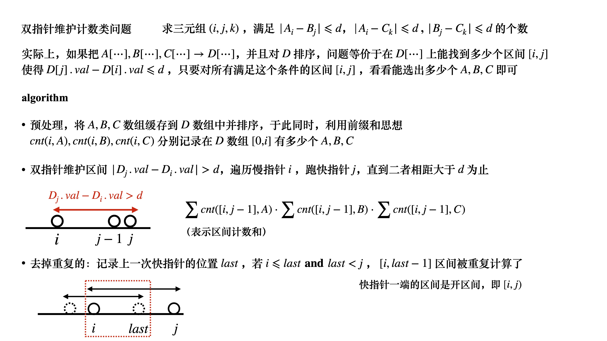

单调性问题，常常伴随着双指针，滑动窗口，单调队列与单调栈，LIS模型一起出现
双指针算法模版
1 2 3 4 5 for (int i = 0, j = 0; i < n; i++) { while (j < i && check(i, j)) j++; // maintain [i...j] }
一般连续的子序列，这种问题都可以考虑滑动窗口 滑动窗口往往还伴随着单调性一起出现
一般的策略是，遍历慢指针，跑快指针
1 2 3 4 5 6 for (int j = 0, i = 0; j < n; j++) { while (i < n && valid(a[i])) i++; // 扫描遍历慢指针，然后让快指针尽可能往前跑 // 并且check [j...i] 区间 }
HDU2756
1 2 3 4 5 6 7 8 9 10 11 12 13 14 15 16 17 18 19 20 21 22 23 24 25 26 27 28 29 30 31 32 33 34 35 36 const int maxn = 1e6 + 10; const int inf = 0x3f3f3f3f; int a[maxn], n; int solve set <int> st; int ans = 0; for (int j = 0, i = 0; j < n; j++) { while (i < n && !st.count(a[i])) st.insert(a[i]), i++; chmax(ans, i-j); st.erase(a[j]); } return ans; } void init // } int main freopen("input.txt" , "r" , stdin); int kase; while (scanf("%d" , &kase) != EOF) { while (kase--) { init(); // get data scanf("%d" , &n); _for(i, 0, n) scanf("%d" , &a[i]); // then solve int res = solve(); printf ("%d\n" , res); } } }
滑动窗口计数问题是莫队算法的基础
一般来说，在滑动窗口的大小固定 的时候遍历快指针，检查慢指针
此时经常需要判断滑动窗口中有多少个不同的数？
HDU2774
1 2 3 4 5 6 7 8 9 10 11 12 13 14 15 16 17 18 19 20 21 22 23 24 25 26 27 28 29 30 31 32 33 34 35 36 37 38 39 40 41 42 const int maxn = 100000 + 10; int a[maxn<<1], n, s; bool ok[maxn<<1 ];int solve int tot = 0, cnt[maxn]; memset(cnt, 0, sizeof(cnt)); for (int i = 0; i < n+s; i++) { if (i < n && ++cnt[ a[i] ] == 1) tot++; if (i-s >= 0 && --cnt[ a[i-s] ] == 0) tot--; int r = min(i, n-1), l = max(0, i-s+1); if (r-l+1 != tot) ok[i%s] = 0; } int ans = 0; for (int i = 0; i < s; i++) if (ok[i]) ans++; return ans; } void init memset(ok, 1, sizeof(ok)); } int main freopen("input.txt" , "r" , stdin); int kase; scanf("%d" , &kase); while (kase--) { init(); // get data scanf("%d%d" , &s, &n); _for(i, 0, n) scanf("%d" , &a[i]); // then solve int ans = solve(); printf ("%d\n" , ans); } }

1 2 3 4 5 6 for (int i = 1; i <= n; i++) g[i] = inf;for (int i = 0; i < n; i++) { int k = lower_bound(g+1, g+1+n, A[i]) - g; d[i] = k; ans = max(ans, k); g[k] = A[i]; }
LCS 问题转换成 LIS 问题 各个元素均不相同 ，求二者的公共子序列长度
将序列A A A [ 1 , 2 , ⋯ , n ] [1, 2, \cdots, n] [ 1 , 2 , ⋯ , n ]
A → m a p A ′ A \xrightarrow{map} A' A m a p A ′ B B B S S S S S S LIS
UVA1471
1 2 3 4 5 6 7 8 9 10 11 12 13 14 15 16 17 18 19 20 21 22 23 24 25 26 27 28 29 30 31 32 33 34 35 36 37 38 39 40 41 42 43 44 45 46 47 48 49 50 51 const int maxn = 200000 + 10; const int inf = 0x3f3f3f3f; int a[maxn], n; int L[maxn], R[maxn]; void prework _rep(i, 1, n) { if (a[i] > a[i-1]) L[i] = L[i-1] + 1; else L[i] = 1; } for (int i = n; i >= 1; i--) { if (a[i] < a[i+1]) R[i] = R[i+1] + 1; else R[i] = 1; } } int solve int g[maxn]; for (int i = 0; i <= n; i++) g[i] = inf; int ans = 0; for (int i = 1; i <= n; i++) { int k = lower_bound(g+1, g+1+n, a[i]) - g; chmax(ans, k-1+R[i]); chmin(g[L[i]], a[i]); } return ans; } void init memset(L, 0, sizeof(L)); memset(R, 0, sizeof(R)); } int main freopen("input.txt" , "r" , stdin); int kase; scanf("%d" , &kase); while (kase--) { init(); // get data scanf("%d" , &n); _rep(i, 1, n) scanf("%d" , &a[i]); // then prework and solve prework(); int ans = solve(); printf ("%d\n" , ans); } }
有一类波浪子序列 问题，也可以转换成为 LIS 问题可以正着求一遍 LIS 并且把结果保存在 d ( i ) d(i) d ( i ) i i i
然后倒着求一遍 LIS 并且假设i i i x x x min ( d ( i ) , x ) \min(d(i), x) min ( d ( i ) , x )
最后枚举所有的位置，min ( 2 d ( i ) − 1 ) \min (2d(i)-1) min ( 2 d ( i ) − 1 )
最长公共上升子序列
1 2 3 4 5 6 7 8 9 10 11 12 13 14 15 16 17 18 19 20 21 22 23 24 25 26 27 28 29 30 31 32 33 34 35 36 37 38 39 40 41 const int maxn = 3000 + 10; int a[maxn], b[maxn], n; int f[maxn][maxn]; int solve memset(f, 0, sizeof(f)); for (int i = 1; i <= n; i++) { int maxv = 0; if (b[0] < a[i]) chmax(maxv, f[i-1][0]); for (int j = 1; j <= n; j++) { if (a[i] != b[j]) f[i][j] = f[i-1][j]; else f[i][j] = maxv + 1; if (b[j] < a[i]) chmax(maxv, f[i-1][j]); } } int ans = 0; for (int i = 1; i <= n; i++) chmax(ans, f[n][i]); return ans; } void init // } int main freopen("input.txt" , "r" , stdin); scanf("%d" , &n); init(); // get data _rep(i, 1, n) scanf("%d" , &a[i]); _rep(i, 1, n) scanf("%d" , &b[i]); // then solve int ans = solve(); printf ("%d\n" , ans); }
UVA1608
1 2 3 4 5 6 7 8 9 10 11 12 13 14 15 16 17 18 19 20 21 22 23 24 25 26 27 28 29 30 31 32 33 34 35 36 37 38 39 40 41 42 43 44 45 46 47 48 49 50 51 52 53 54 55 56 57 58 59 60 61 62 63 64 65 66 67 68 69 70 71 72 73 74 75 const int maxn = 200000 + 10; int a[maxn], n; map<int, int> mp; int pre[maxn], nxt[maxn]; void prework mp.clear(); for (int i = 1; i <= n; i++) { if (!mp.count(a[i])) { pre[i] = 0; mp[a[i]] = i; } else { int p = mp[a[i]]; pre[i] = p; mp[a[i]] = i; } } mp.clear(); for (int i = n; i >= 1; i--) { if (!mp.count(a[i])) { nxt[i] = n+1; mp[a[i]] = i; } else { int p = mp[a[i]]; nxt[i] = p; mp[a[i]] = i; } } } bool dfs(int le, int ri) { if (le >= ri) return true ; int i = le, j = ri; int mid = 0; while (i <= j) { if (pre[i] < le && nxt[i] > ri) { mid = i; break ; } if (pre[j] < le && nxt[j] > ri) { mid = j; break ; } i++, j--; } if (mid == 0) return false ; return dfs(le, mid-1) && dfs(mid+1, ri); } void init // } int main freopen("input.txt" , "r" , stdin); int kase; scanf("%d" , &kase); while (kase--) { // get data scanf("%d" , &n); _rep(i, 1, n) scanf("%d" , &a[i]); // prework and solve prework(); bool ans = false ; if (dfs(1, n)) ans = true ; ans ? puts("non-boring" ) : puts("boring" ); } }
Acwing102
1 2 3 4 5 6 7 8 9 10 11 12 13 14 15 16 17 18 19 20 21 22 23 24 25 26 27 28 29 30 31 32 33 34 35 36 37 38 39 40 41 42 43 44 45 46 47 const int maxn = 100000 + 10; const double eps = 1e-6; int f, n; double a[maxn]; bool check(double avr) { double sum[maxn]; memset(sum, 0.0, sizeof(sum)); for (int i = 1; i <= n; i++) sum[i] = sum[i-1] + a[i] - avr; double minv = 0.0; for (int i = f; i <= n; i++) { int j = i-f; chmin(minv, sum[j]); if (sum[i] - minv >= 0) return true ; } return false ; } double solve(double Max) { double l = 0, r = Max; while (r - l > eps) { double mid = (l + r) / 2; if (check(mid)) l = mid; else r = mid; } return r; } void init // } int main freopen("input.txt" , "r" , stdin); scanf("%d%d" , &n, &f); init(); // get data double Max = 0; _rep(i, 1, n) scanf("%lf" , &a[i]), chmax(Max, a[i]); // then solve double ans = solve(Max); printf ("%d\n" , (int)(ans * 1000)); }
那么，如果将本例稍加变形 求一个子段，它的和最大，子段的长度不大于 L ( ⩽ L ) (\leqslant L) ( ⩽ L ) 滑动窗口的单调性
max ( S [ i ] − S [ j − 1 ] ) = S [ i ] − min ( S [ j − 1 ] ) \max(S[i] - S[j-1]) = S[i] - \min(S[j-1]) max ( S [ i ] − S [ j − 1 ] ) = S [ i ] − min ( S [ j − 1 ] ) 遍历 i i i 并且每次固定 i i i 那么对于每个 S [ i ] S[i] S [ i ] ∀ j ∈ [ 1 , i ] \forall j \in [1, i] ∀ j ∈ [ 1 , i ] S [ j − 1 ] S[j-1] S [ j − 1 ] 那么取后出现的，不取前面出现的，这是滑动窗口的性质 S [ j − 1 ] ⩾ S [ j ] S[j-1] \geqslant S[j] S [ j − 1 ] ⩾ S [ j ] j ← j + 1 j \leftarrow j+1 j ← j + 1 前面的 j j j 是无用解
1 2 3 4 5 6 7 8 9 10 11 void solve int ans = -inf; int i = 1, j = 1; for (; i <= n; i++) { while (j < i && (i-j+1 > L || S[j-1] >= S[j])) j++; chmax(ans, S[i] - S[j-1]); } printf ("%d\n" , ans); }
Acwing2455

1 2 3 4 5 6 7 8 9 10 11 12 13 14 15 16 17 18 19 20 21 22 23 24 25 26 27 28 29 30 31 32 33 34 35 36 37 38 39 40 41 42 43 44 45 46 47 48 49 50 51 52 53 54 55 56 57 58 59 60 61 62 63 64 65 66 67 68 69 70 71 72 73 74 75 76 77 78 79 80 81 82 83 84 85 86 87 88 const int maxn = 3e5 + 10; class A { public: int val, id; A() = default; A(int val, int id) : val(val), id(id) {} bool operator< (const A &rhs) const { return val < rhs.val || (val == rhs.val && id < rhs.id); } }; A vec[maxn]; int m = 0; int la, lb, lc, d; ll cnt[maxn][3]; void prework sort(vec+1, vec+1+m); for (int i = 1; i <= m; i++) { memcpy(cnt[i], cnt[i-1], sizeof(cnt[i])); cnt[i][vec[i].id]++; //printf ("%d " , vec[i].val); } } void solve ll res = 0; int i = 1, j = 1; //debug(cnt[1][0]); //debug(vec[j].val); int last = -1; for (; i <= m; i++) { while (j <= m && vec[j].val - vec[i].val <= d) j++; if (j > last) { ll t1 = cnt[j-1][0] - cnt[i-1][0]; ll t2 = cnt[j-1][1] - cnt[i-1][1]; ll t3 = cnt[j-1][2] - cnt[i-1][2]; res += t1 * t2 * t3; } if (i <= last && j > last) { ll t1 = cnt[last-1][0] - cnt[i-1][0]; ll t2 = cnt[last-1][1] - cnt[i-1][1]; ll t3 = cnt[last-1][2] - cnt[i-1][2]; res -= t1 * t2 * t3; } last = j; } printf ("%lld\n" , res); } void init memset(cnt, 0, sizeof(cnt)); m = 0; } int main freopen("input.txt" , "r" , stdin); scanf("%d%d%d%d" , &la, &lb, &lc, &d); init(); _for(i, 0, la) { int x; scanf("%d" , &x); vec[++m] = A(x, 0); } _for(i, 0, lb) { int x; scanf("%d" , &x); vec[++m] = A(x, 1); } _for(i, 0, lc) { int x; scanf("%d" , &x); vec[++m] = A(x, 2); } // prework and solve prework(); solve(); }
 微信
微信 支付宝
支付宝